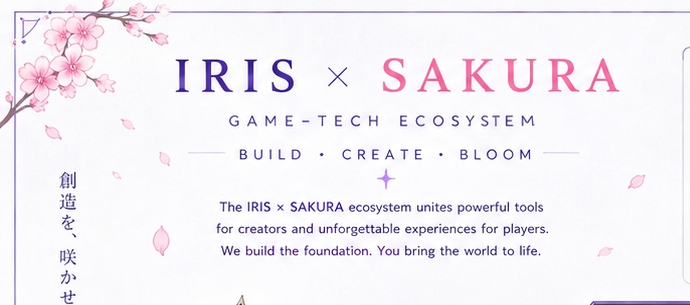
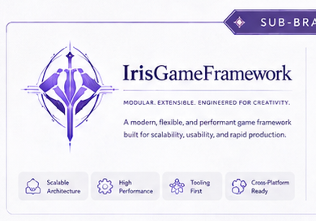
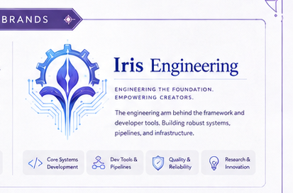
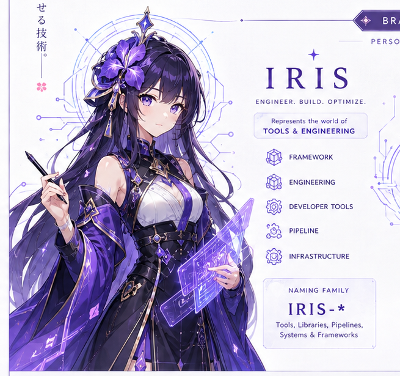
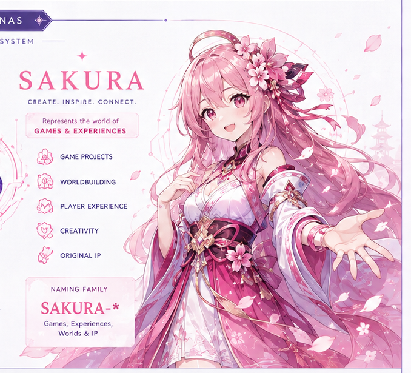
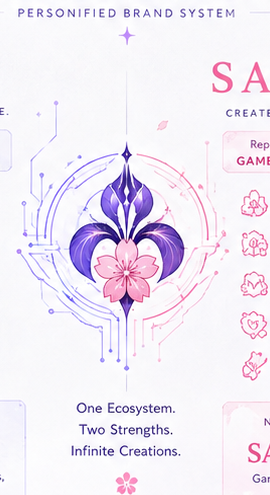
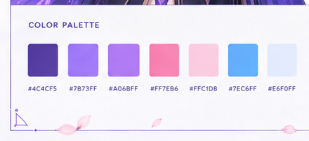
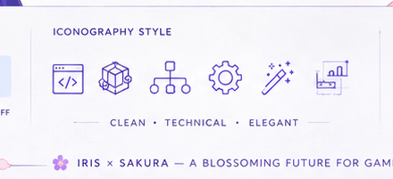
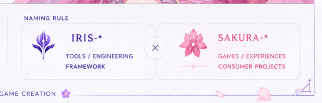

IRIS × SAKURA · BRAND SYSTEM
品牌视觉与创作
一套连接工程体系与游戏体验的双人格视觉语言：IRIS 负责构建，SAKURA 负责绽放。
ONE ECOSYSTEM · TWO STRENGTHS
Build · Create · Bloom
IRIS 面向 Framework、Engineering、Developer Tools、Pipeline 与 Infrastructure；SAKURA 面向 Games、Experiences、Worldbuilding 与原创 IP。两者共享同一套结构、色彩和联合徽记，但保持清晰的产品边界。


ENGINEERING SUB-BRANDS
工程子品牌
两张品牌卡分别服务于 Unity 框架与研发工作流产品；正式产品名和代码命名仍以各项目自身合同为准。


DUAL PERSONAS
两种力量，同一个生态
IRIS 是冷静、精确、结构化的系统建造者；SAKURA 是温暖、灵动、富有生命力的体验创造者。



JOINT EMBLEM
Iris builds. Sakura blooms.
联合徽记用于跨项目、生态总览与共同叙事；独立项目场景优先使用自己的品牌卡，避免联合标识掩盖产品身份。
VISUAL LANGUAGE
色彩、图标与命名
以鸢尾紫和樱花粉区分工程与创作，以天空蓝和浅色背景保持界面清晰；图标采用圆角线框与可扩展几何。



CHARACTER PORTRAITS
品牌人格肖像
肖像用于品牌故事、演示与文化表达，不替代项目 Logo、应用图标或产品界面中的功能性标识。